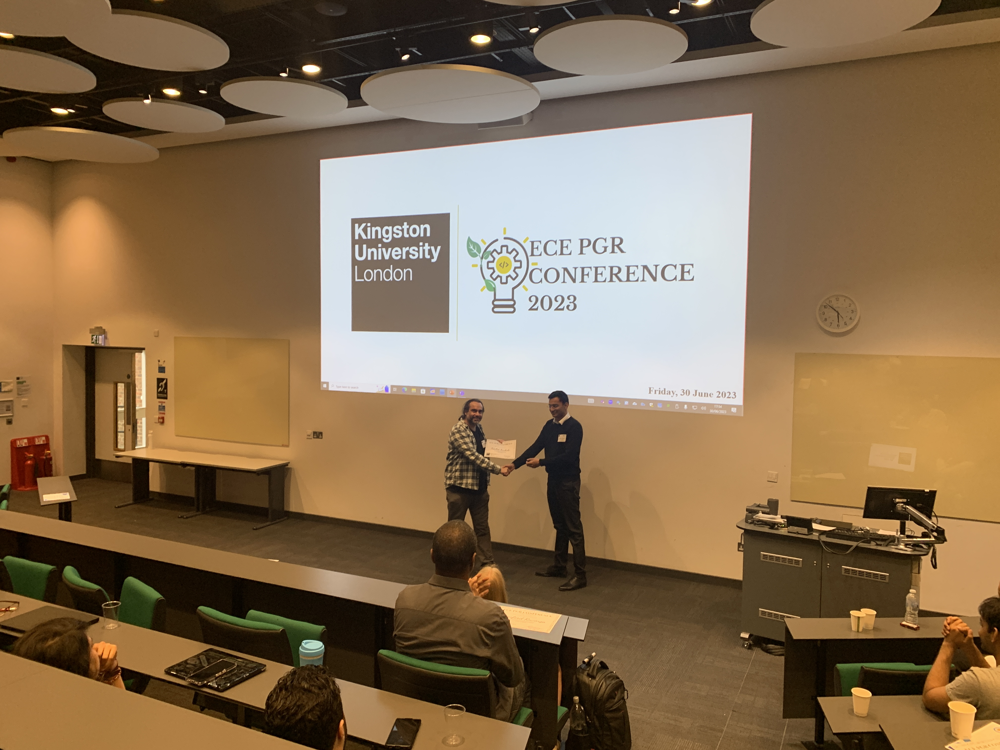
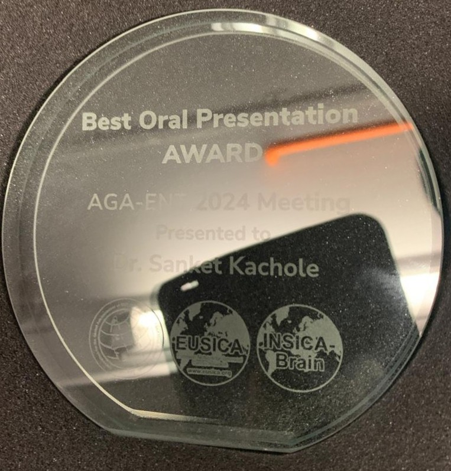

Awards & Funding
HANCOTHON MICCAI 2025 Challenge – 2nd Place. Achieved 2nd position in the global HANCOTHON “Recurrence Prediction” task at MICCAI 2025, competing against 67 international teams, including major industry groups such as Microsoft. The work demonstrated strong modelling performance for cancer recurrence prediction.
Download award certificate (PDF)
Watch award ceremony on YouTube
CHIMERA Challenge – Best Multimodal Strategy (MICCAI 2025). Awarded for the PROFUSEme project, recognising excellence in integrating multimodal genetic, clinical, and imaging data for prostate cancer recurrence prediction. This distinction includes a $500 prize from the SIG-CompPath committee.
Best Oral Presentation Award – ECE Conference, Kingston University. Recognised for excellence in presenting research on neuromorphic vision and event-based perception.
Best Oral Presentation Award – AGA-ENT 2024 Meeting, Oncology Professional Care. Awarded for outstanding presentation quality and high-impact research contributions.
Distinguished Research Achievement & Funding Award – Kingston University. Awarded for high-impact publications and research excellence.

Faculty Research Student Conference & Training Fund – Kingston University. Funding support to advance doctoral research in neuromorphic perception.